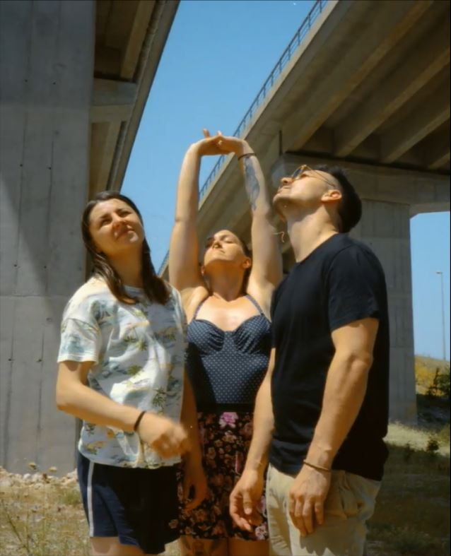

Punčke are probably the best young rock band that came from Croatia in the last 10 years! Although they just reached another
peak in their career supporting Queens of the Stone Age in Ljubljana and Zagreb in June 2014, Lucija (guitar and vocals),
Goran (drums) and Anja (bass guitar) are continuing to push things forward.
Formed in Vinkovci, Croatia back in 2007 Punčke
started as a multimembered high school collective but from 2011 they are a strong three piece band that still hasn't decided
which genre they belong to. The audience and media usually describes Punčke as an alternative/indie or punk rock band
but all kinds of musical influences and their personal musical favorites made every one of their songs different from the
others. You can hear that on the band's debut album "Sunčano s povremenom naoblakom" that was released at the end of 2013 and
immediately became praised by the audience as well as the critics. The album was included in each and every "Best Album
of the Year" list in magazines and music websites in Croatia and the region.
Until now, Punčke count over 350 great live shows
in Croatia, Serbia, Slovenia, Austria, Germany, Netherlands, Switzerland, Italy and more, playing festivals like InMusic,
Sziget Festival in Budapest, EXIT in Novi Sad, Terraneo and opening for Queens of the Stone Age as mentioned before. Their
explosive, loud and emotional performance is well known to anyone who has been to their shows. Last, but not least – Punčke
are the first band from the Balkans to tour Asia and Malaysia (Kuala Lumpur, Philippines, Taiwan and Japan).
Lucija Ivšić - guitar / vocal
Goran Nježić - drums
Anja Tkalec - bass guitar
Vinkovci, Novska i Sisak, Croatia
Zagreb
punchke.band@gmail.com - General
bookingcereal@gmail.com - Booking & Press